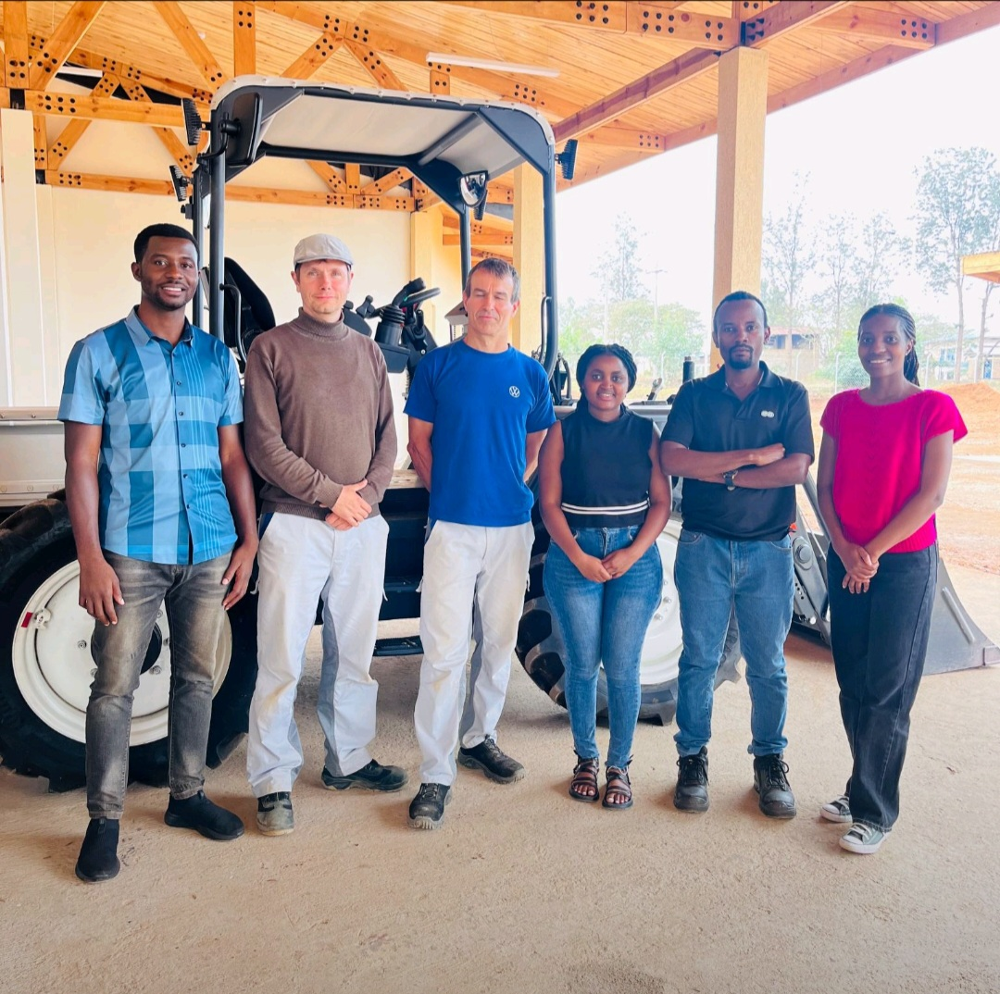
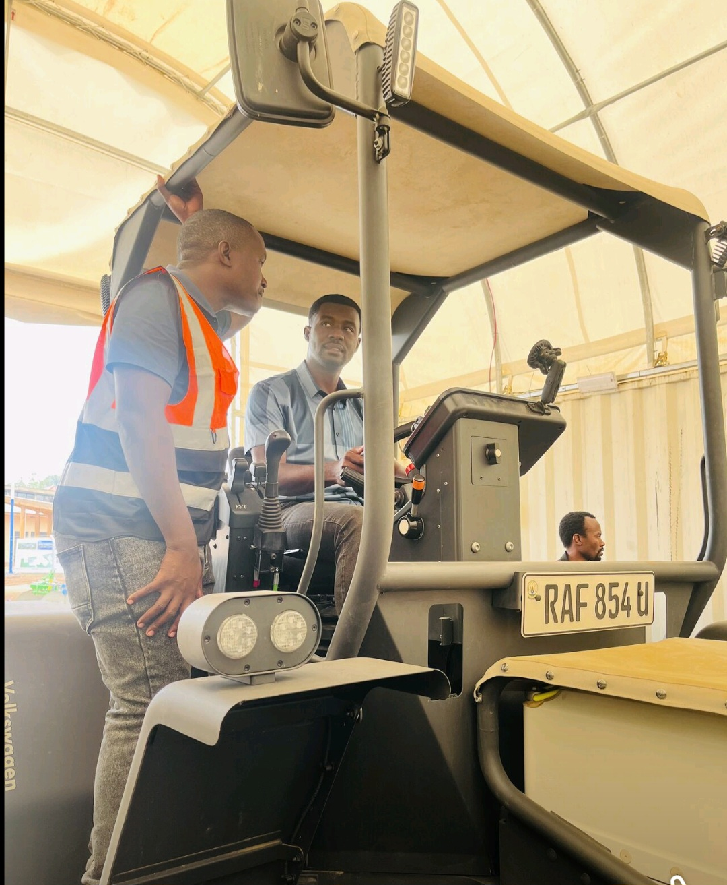
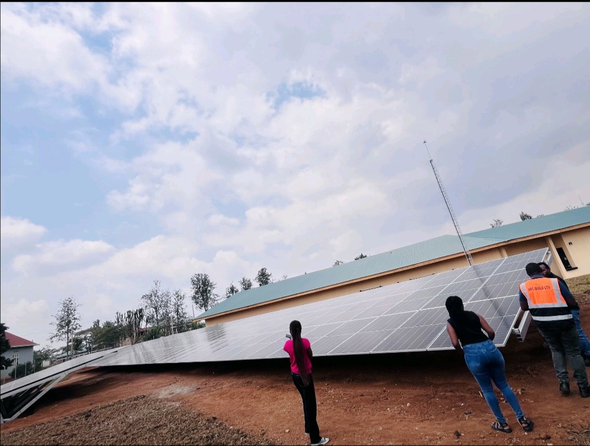
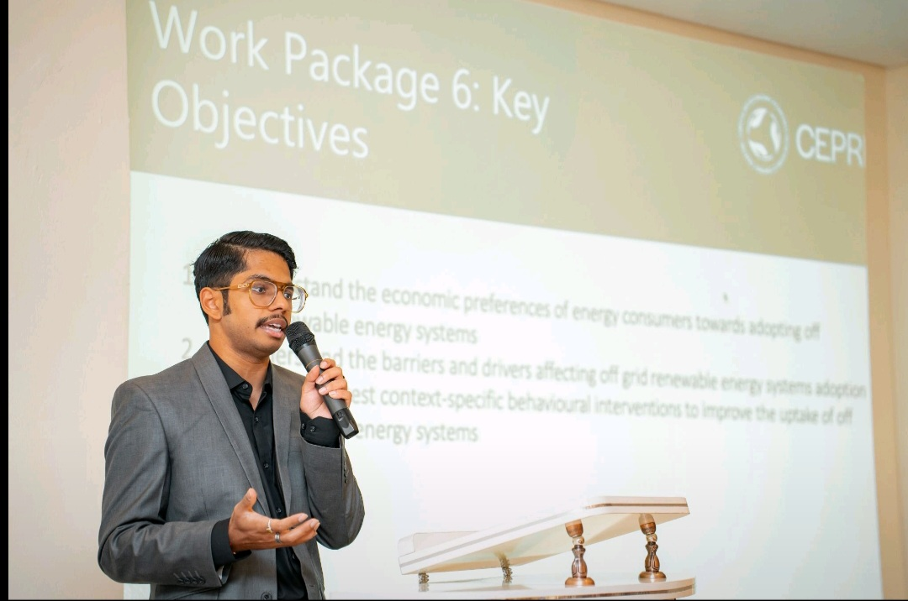
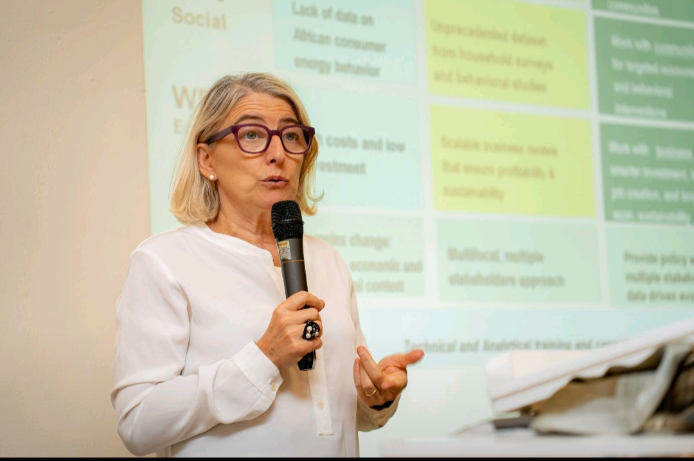

<!DOCTYPE html>

<html lang="en">

<head>

<meta charset="UTF-8">

<meta name="viewport" content="width=device-width, initial-scale=1.0">

<title>Iyata Anthony | Researcher & Technologist</title>


<style>

:root{

  --primary:#1f4fd8;

  --secondary:#6f7bff;

  --bg:#f5f7fb;

  --card:#ffffff;

  --text:#222;

}

*{box-sizing:border-box}

html{scroll-behavior:smooth}

body{

  margin:0;

  font-family:system-ui,-apple-system,Segoe UI,Roboto,Arial,sans-serif;

  background:var(--bg);

  color:var(--text);

  line-height:1.6;

}


/* HEADER */

header{

  background:linear-gradient(120deg,var(--primary),var(--secondary));

  color:#fff;

  text-align:center;

  padding:56px 20px 64px;

}

header img{

  width:160px;

  height:160px;

  border-radius:50%;

  object-fit:cover;

  border:5px solid #fff;

  margin-bottom:15px;

}

header h1{margin:10px 0 5px;font-size:32px}

header p{margin:0;font-size:16px}


/* NAVIGATION */

nav{

  position:sticky;

  top:0;

  background:#fff;

  z-index:20;

  box-shadow:0 2px 8px rgba(0,0,0,.08);

}

nav ul{

  display:flex;

  flex-wrap:wrap;

  gap:8px;

  list-style:none;

  margin:0;

  padding:10px;

  justify-content:center;

}

nav a{

  font-size:13px;

  text-decoration:none;

  color:#222;

  padding:7px 12px;

  border-radius:999px;

  border:1px solid #ddd;

  transition:.25s;

}

nav a:hover{

  background:var(--primary);

  color:#fff;

  border-color:var(--primary);

}


/* SECTIONS */

section{

  max-width:1150px;

  margin:auto;

  padding:50px 20px;

}

section h2{

  margin-top:0;

  margin-bottom:25px;

  font-size:26px;

  border-left:6px solid var(--primary);

  padding-left:12px;

}


.card{

  background:var(--card);

  border-radius:16px;

  padding:22px;

  box-shadow:0 6px 18px rgba(0,0,0,.06);

  margin-bottom:22px;

}


.grid-3{

  display:grid;

  grid-template-columns:repeat(auto-fit,minmax(280px,1fr));

  gap:22px;

}

.grid-2{

  display:grid;

  grid-template-columns:repeat(auto-fit,minmax(320px,1fr));

  gap:22px;

}


/* LOGOS */

.logo-link img{

  width:68px;

  transition:transform .3s;

}

.logo-link img:hover{

  transform:scale(1.15);

}


/* BADGES */

.badges{

  display:flex;

  flex-wrap:wrap;

  gap:10px;

}

.badges span{

  background:#eef1ff;

  padding:7px 12px;

  border-radius:999px;

  font-size:13px;

}


/* COLLAGE */

.collage{

  display:grid;

  grid-template-columns:repeat(auto-fit,minmax(160px,1fr));

  gap:12px;

  margin-top:18px;

}

.collage img{

  width:100%;

  border-radius:14px;

}


footer{

  background:#fff;

  text-align:center;

  padding:30px;

  color:#555;

}

  .li-cert-wrap{

  display:grid;

  grid-template-columns:repeat(auto-fit,minmax(300px,1fr));

  gap:24px;

}


.li-cert{

  display:flex;

  gap:14px;

  align-items:flex-start;

}


.li-cert-thumb img{

  width:120px;

  border-radius:6px;

  cursor:pointer;

  border:1px solid #e0e0e0;

  transition:transform .25s, box-shadow .25s;

}


.li-cert-thumb img:hover{

  transform:translateY(-2px);

  box-shadow:0 4px 14px rgba(0,0,0,.2);

}


.li-cert-text h4{

  margin:0;

  font-size:15px;

  font-weight:600;

}


.li-cert-text p{

  margin-top:4px;

  font-size:13px;

  color:#555;

}


/* Modal */

.li-modal{

  display:none;

  position:fixed;

  inset:0;

  background:rgba(0,0,0,.85);

  z-index:999;

}


.li-modal-img{

  display:block;

  max-width:90%;

  max-height:90%;

  margin:5% auto;

  border-radius:8px;

}


.li-close{

  position:absolute;

  top:20px;

  right:30px;

  font-size:30px;

  color:#fff;

  cursor:pointer;

}

/* Small organization logo like LinkedIn */

.li-cert-org {

  display: inline-block;

  margin-bottom: 6px;

}


.li-cert-org img {

  width: 24px;

  height: 24px;

  object-fit: contain;

}

<!DOCTYPE html>

<html lang="en">

<head>

  <meta charset="UTF-8">

  <title>Your Site Title</title>


  <!-- ✅ CSS STARTS HERE -->

  <style>


    /* Publications CSS */

    .publications-section {

      margin-top: 30px;

    }


    .section-title {

      font-size: 22px;

      font-weight: 700;

      margin-bottom: 20px;

    }


    .publication-card {

      border-bottom: 1px solid #e6e6e6;

      padding: 20px 0;

    }


    .publication-title {

      font-size: 18px;

      font-weight: 600;

      margin-bottom: 6px;

    }


    .publication-meta {

      font-size: 14px;

      color: #555;

      margin-bottom: 12px;

    }


    .publication-btn {

      display: inline-flex;

      align-items: center;

      gap: 6px;

      padding: 8px 16px;

      border: 1.5px solid #333;

      border-radius: 999px;

      font-size: 14px;

      font-weight: 500;

      color: #000;

      text-decoration: none;

      transition: all 0.2s ease;

      margin-bottom: 12px;

    }


    .publication-btn:hover {

      background-color: #f3f3f3;

    }


    .arrow {

      font-size: 14px;

    }


    .publication-desc {

      font-size: 14px;

      color: #444;

    }

.publication-text {

  max-height: 60px;

  overflow: hidden;

  transition: max-height 0.4s ease;

}


.publication-text.expanded {

  max-height: 1000px;

}


.see-more {

  display: inline-block;

  margin-top: 6px;

  color: #0a66c2;

  font-size: 14px;

  cursor: pointer;

}

  .section-box {

  background: #ffffff;

  border-radius: 18px;

  padding: 30px;

  margin: 40px auto;

  max-width: 900px;

  box-shadow: 0 10px 25px rgba(0, 0, 0, 0.08);

}


.section-title {

  font-size: 26px;

  font-weight: 700;

  margin-bottom: 25px;

  color: #222;

}


.award-item {

  padding: 18px 0;

  border-bottom: 1px solid #e6e6e6;

}


.award-item:last-child {

  border-bottom: none;

}


.award-item h3 {

  font-size: 18px;

  font-weight: 600;

  margin-bottom: 6px;

  color: #111;

}


.issuer {

  font-size: 14px;

  font-weight: 500;

  color: #555;

  margin-bottom: 8px;

}


.description {

  font-size: 14px;

  line-height: 1.6;

  color: #444;

}


  </style>

  <!-- ✅ CSS ENDS HERE -->


</head>


<body>


  <!-- ✅ YOUR CURVED BODY CONTAINER -->

  <div class="main-container">


    <!-- 🔽 PASTE THE PUBLICATIONS HTML HERE -->

    <!-- (the <section class="publications-section">...</section>) -->


  </div>


</body>

</html>


</style>

</head>


<body>


<header>

  

  <h1>Iyata Anthony</h1>

  <p>Researcher • Technologist • Energy Systems & IT Strategy</p>

</header>


<nav>

<ul>

  <li><a href="#about">About</a></li>

  <li><a href="#education">Education</a></li>

  <li><a href="#research">Research</a></li>

  <li><a href="#work">Work Experience</a></li>

  <li><a href="#skills">Technical Skills</a></li>

  <li><a href="#business">Business</a></li>

  <li><a href="#leadership">Leadership</a></li>

  <li><a href="#licenses">Licenses & Certifications</a></li>

  <li><a href="#courses">Courses</a></li>

  <li><a href="#volunteering">Volunteering</a></li>

  <li><a href="#publications">Publications</a></li>

  <li><a href="#honors">Honors & Awards</a></li>

  <li><a href="#post">Post</a></li>

  <li><a href="#blog">Blog</a></li>

  <li><a href="#hobbies">Hobbies</a></li>

  <li><a href="#contact">Contact</a></li>

  <li><a href="#cv">CV</a></li>

</ul>

</nav>


<section id="about">

<h2>About</h2>

<div class="card">

<p>Iyata Anthony is a multidisciplinary researcher and technology professional with interests in energy systems, lithium-ion batteries, data science, and IT strategy.</p>

</div>

</section>


<section id="education">

<h2>Education</h2>

<div class="grid-3">


<div class="card">

<a class="logo-link" href="http://www.cmu.edu/africa" target="_blank">


</a>

<h3>Carnegie Mellon University Africa</h3>

<p>MSc Electrical & Computer Engineering<br>Jul 2024 – Dec 2025</p>

<p><b>Grade:</b> 3.85 / 4.0</p>

  <p><b>Skills:</b> Analytical Skills, Computer Science,  Data Science,  Python(Programming Language)</p>

</div>


<div class="card">

<a class="logo-link" href="https://www.wqu.edu" target="_blank">


</a>

<h3>WorldQuant University</h3>

<p>Certificate of Completion (with Honors), Scientific Computing & Python for Data Science<br>2019 • Honors</p>

 <p><b>Grade:</b> Honors</p> 

  <p><b>Grade:</b> Computer Science and Analytical Skills</p>

</div>


<div class="card">

<a class="logo-link" href="https://www.babcock.edu.ng" target="_blank">


</a>

<h3>Babcock University, Nigeria</h3>

<p>BSc Computer Science<br>2013 – 2017</p>

<p><b>Grade:</b> First Class (4.6 / 5.0)</p>

  <p><b>Skills:</b> English, Computer Science, Analytical Skills</p>

</div>


</div>

</section>


<section id="research">

<h2>Research</h2>

<div class="card">

<ul>

<li>Published Work</li>

<li>Ongoing Work</li>

</ul>

</div>

</section>


<section id="work">

<h2>Work Experience</h2>


<div class="card">

<b>CV:</b>

<a href="#">Business</a> |

<a href="#">Industry</a>

  <a href="#">Information Technology</a>

</div>


<div class="grid-2">


<div class="card">

<a class="logo-link" href="http://www.kcrc.rw" target="_blank">


</a>

<h3>Research Assistant – KCRC</h3>

<p>Jun 2025 – Present • Kigali, Rwanda</p>

<p>Researching on the technical viability of lithium-ion batteries for microgrid storage applications from electric vehicles & E-waste</p>

</div>


<div class="card">

<a class="logo-link" href="https://www.nnpcgroup.com" target="_blank">


</a>

<h3>NNPC Limited</h3>

<p>IT Strategist (Apr 2023–Present)<br>

Business & IS Architect (May 2020–Mar 2023)</p>

</div>


<div class="card">

<a class="logo-link" href="http://www.cmu.edu/africa" target="_blank">


</a>

<h3>IT Support Officer – CMU Africa</h3>

<p>Carnegie Mellon University Africa

Sep 2024 - May 2025  

Kigali City, Rwanda

IT audio visual systems support</p>

</div>


<div class="card">

<a class="logo-link" href="https://www.zcp.com.ng" target="_blank">


</a>

<h3>Operations Officer – Zane Commodity Platform</h3>

<p>Zane Commodity Platform Ltd.

Nov 2019 - Apr 2020</p>

</div>


<div class="card">

<a class="logo-link" href="https://www.mathevia.co.uk" target="_blank">


</a>

<h3>Tutor</h3>

<p>Mathevia

Nov 2018 - Apr 2020  

Tutoring mathematics and computer programming.</p>

</div>


<div class="card">

<a class="logo-link" href="https://www.marketplace.whmcs.com/group/gladepay" target="_blank">


</a>

<h3>Software Developer – GladePay</h3>

<p>GladePay (www.gladepay.com)

Dec 2018 - May 2019  

GladePay is an online payments processing company. The company's vision is to make payments processing as SIMPLE as possible.</p>

</div>


<div class="card">

<a class="logo-link" href="http://thesmarthub.com.ng" target="_blank">


</a>

<h3>System Analyst</h3>

<p>The Smarthub Nigeria

Jan 2018 - Oct 2018</p>

</div>


</div>

</section>


<section id="skills">

<h2>Technical Skills</h2>

<div class="card badges">

<span>Lithium-ion Batteries</span>

<span>EHS Engineering</span>

<span>Python</span>

<span>Data Science</span>

<span>ITIL</span>

<span>Operations Research</span>

<span>Leadership</span>

<span>Research Skills</span>

<span>Technical Support</span>

<span>Health & Safety Training</span>

<span>Safety Management Systems</span>

<span>Environment, Health, Safety (EHS) </span>

<span>Computer Science</span>

  <span>Data Quality</span>

  <span>Quality Assurance</span>

  <span>English</span>

  <span>Record Management</span>

  <span>Debate</span>

  <span>Pubic Speaking</span>

  <span>Microsoft Office</span>

 <span>Management</span> 

</div>

</section>

  <section id="licenses">

  <h2>Licenses & Certifications</h2>


  <div class="card">


    <!-- DOT Certificate -->

    <div class="li-cert">

      <div class="li-cert-thumb" onclick="openCert('dot.jpg')">

        

      </div>

      <div class="li-cert-text">


  <a href="https://www.transportation.gov" target="_blank" class="li-cert-org">

    

  </a>


  <h4>USA DOT Hazardous Materials Receiving</h4>

  <p>Safety procedures in the receipt and handling of hazardous materials</p>

<p><b>skills:</b> Environment, Health, and Safety (EHS) . EHS Engineering. Health and Safety Training</p>

</div>


    </div>


    <!-- LIB Certificate -->

    <div class="li-cert">

      <div class="li-cert-thumb" onclick="openCert('lib.jpg')">

        

      </div>

      <div class="li-cert-text">


  <a href="https://www.cmu.edu" target="_blank" class="li-cert-org">

    

  </a>


  <h4>CMU Lithium-Ion Battery (LIB)</h4>

  <p>Safety procedures for lithium-ion batteries</p>

<p><b>skills:</b> Lithium-ion Batteries. Safety Management. Systems.  Environment,  Health, and Safety(EHS)</p>

</div>


    </div>


  </div>

</section>


<!-- Modal -->

<div id="certModal" class="li-modal">

  <span class="li-close" onclick="closeCert()">&times;</span>

  

</div>

  <section id="volunteering" class="section">

  <h2>Volunteering</h2>


  <div class="card">

    <div class="card-header">

      

      <div>

        <h3>Secretary, Laity Education Committee</h3>

        <p class="institution">

          St Christopher Catholic Church, Kaura, Abuja

        </p>

        <p class="category">Education</p>

      </div>

    </div>


    <p class="description">

      Facilitation of educational programs for members of the

      St Christopher Catholic Church, Kaura, Abuja.

    </p>

  </div>

</section>


 <section id="publications" class="publications-section">

 

  <h2 class="section-title">Publications</h2>

    <div class="card">


  <!-- Publication 1 -->

  <div class="publication-card">

    <h3 class="publication-title">

      The Enterprise Architecture (EA) Practice – An Analysis of EA Models for Different Organisational Contexts

    </h3>


    <p class="publication-meta">

      Enterprise Architecture Professional Journal (EAPJ) · Apr 6, 2024

    </p>


    <a

      href="https://eapj.org/the-enterprise-architecture-ea-practice-an-analysis-of-ea-models-for-different-organisational-contexts/"

      target="_blank"

      class="publication-btn"

    >

      Show publication

      <span class="arrow">↗</span>

    </a>


    <p class="publication-desc publication-text" id="pubText-0">

  This research studies three broad Enterprise Architecture (EA) implementation models in enterprises as published by James Lapalme (2012) in the article: “Three Schools of Thought on Enterprise Architecture”. These schools of thought include:


EA for IT Architecting;

EA for Enterprise Integrating;

EA for Ecosystem Adaptation.


This article expands upon these schools of thought by highlighting the merits and demerits of each. The study also x-rays the EA implementation model adopted in Nigerian National Petroleum Company (NNPC) Limited and its attendant opportunities and drawbacks. The authors then propose a matrix to guide the selection of suitable EA implementation models based on certain identified organisational characteristics including the enterprise size, regulatory environment and business scope.


This research is particularly useful as it builds upon existing knowledge in the EA discipline as well as drawing from the experiential knowledge of the authors, and the review of EA subject matter experts working in a large energy enterprise with multiple subsidiaries (i.e., the NNPC Limited).


This study is suitable for individuals/organisations who are looking to maximise the benefits of EA in their organisations or mitigate/remediate risks often encountered in the implementation of EA as an organisational practice. It is also useful for academic purposes.

</p>


<span class="see-more" onclick="toggleText('pubText-0', this)">

  See more

</span>


  </div>


  <!-- Publication 2 -->

  <div class="publication-card">

    <h3 class="publication-title">

      Towards Fostering the Growth of Operations Research in Nigeria: The Role of Computer Scientists

    </h3>


    <p class="publication-meta">

      American Journal of Operational Research · Nov 14, 2018

    </p>


    <a

      href="http://article.sapub.org/10.5923.j.ajor.20180801.01.html"

      target="_blank"

      class="publication-btn"

    >

      Show publication

      <span class="arrow">↗</span>

    </a>


    <p class="publication-desc publication-text" id="pubText-1">

  Operations Research (OR) is an interdisciplinary field that finds its roots in applied mathematics, automates its underlying mathematical processes using computer science systems and mechanisms, and produce results for enhancing managerial decision making. The profession has grown and evolved from the use of traditional mathematical techniques for optimization of processes through to a stage where advanced computer-based techniques such as modelling and simulation are being used to carry out OR studies. This growth has been engendered by two main factors – wide acceptance by academic institutions; and, the impact of Computer Science tools and programs used for carrying out activities during OR studies. No country develops beyond its growth in science and technology. This paper presents the role Computer Science has played in the development of OR and consequently the role of Computer Scientists in each phase of OR studies. The paper also reveals the future prospects of OR as research in the area of Artificial Intelligence continues to find relevance in OR (i.e., Artificial Operations Research [AOR]). The paper concludes by presenting key recommendations for immediate action by the Nigerian government, business owners, academia and OR teams in order to position the country as a producer and exporter of OR tools and techniques and not just a consumer of OR techniques.


Keywords: Operations Research (OR), Computer Science, Computer Scientists, Artificial Operations Research

</p>


<span class="see-more" onclick="toggleText('pubText-1', this)">

  See more

</span>


  </div>

    </div>


</section>


<section id="honors-awards" class="section-box">

  <h2 class="section-title">Honors & Awards</h2>


  <div class="award-item">

    <h3>Most Supportive Classmate in the Class of 2026</h3>

    <p class="issuer">Carnegie Mellon University Africa · Aug 2024</p>

    <p class="description">

      An award given to recognise the student with an aptitude to collaborate with fellow students in achieving set objectives for projects and other school organised activities.

    </p>

  </div>


  <div class="award-item">

    <h3>Vice President</h3>

    <p class="issuer">

      I.C.T Community Development Service (I.C.T C.D.S), National Youth Service Corp (NYSC) · Oct 2018

    </p>

    <p class="description">

      Merit award given in recognition of outstanding contribution to the ICT CDS.

    </p>

  </div>


  <div class="award-item">

    <h3>First Class Honours, BSc Computer Science</h3>

    <p class="issuer">Babcock University · Jun 2017</p>

  </div>


  <div class="award-item">

    <h3>Most Influential Student</h3>

    <p class="issuer">Babcock University Computer Club · Mar 2017</p>

  </div>


  <div class="award-item">

    <h3>Most Versatile Student</h3>

    <p class="issuer">Babcock University Computer Club · Mar 2016</p>

  </div>

</section>


<section id="post">

<h2>Post</h2>

<div class="card">

<p>CEPREC Rwanda visit to the Volkswagen GenFarm Project in Gashora, Rwanda.</p>

<div class="collage">











</div>

</div>

</section>


<section id="blog">

<h2>Blog</h2>

<div class="card">

<ul>

<li>Research write-ups</li>

<li>Tech articles</li>

<li>Case studies</li>

<li>Industry insights</li>

<li>Thought leadership</li>

</ul>

</div>

</section>


<section id="hobbies">

<h2>Hobbies</h2>

<div class="card">

Reading • Gaming • Podcasting • Volunteering • Writing

</div>

</section>


<section id="contact">

<h2>Contact</h2>

<div class="card">

<p>Email: adikpeiyata@gmail.com<br>

LinkedIn: <a href="https://www.linkedin.com/in/iyata-adikpe" target="_blank">LinkedIn Profile</a></p>

</div>

</section>


<section id="cv">

<h2>CV & Certifications</h2>

<div class="card">

<ul>

<li>DASM – PMI</li>

<li>BRMP – APMG</li>

<li>Prosci® Change Management</li>

<li>COBIT 2019 – ISACA</li>

<li>PMI-ACP</li>

</ul>

<p>Academic CV (Upload later)</p>

</div>

</section>


<footer>

© Linestech 

</footer>

  <script>

function openCert(src){

  document.getElementById("certImage").src = src;

  document.getElementById("certModal").style.display = "block";

}


function closeCert(){

  document.getElementById("certModal").style.display = "none";

}

    function toggleText(id, el) {

  const text = document.getElementById(id);

  text.classList.toggle("expanded");


  el.textContent = text.classList.contains("expanded")

    ? "See less"

    : "See more";

}


</script>


</body>

          </html>
